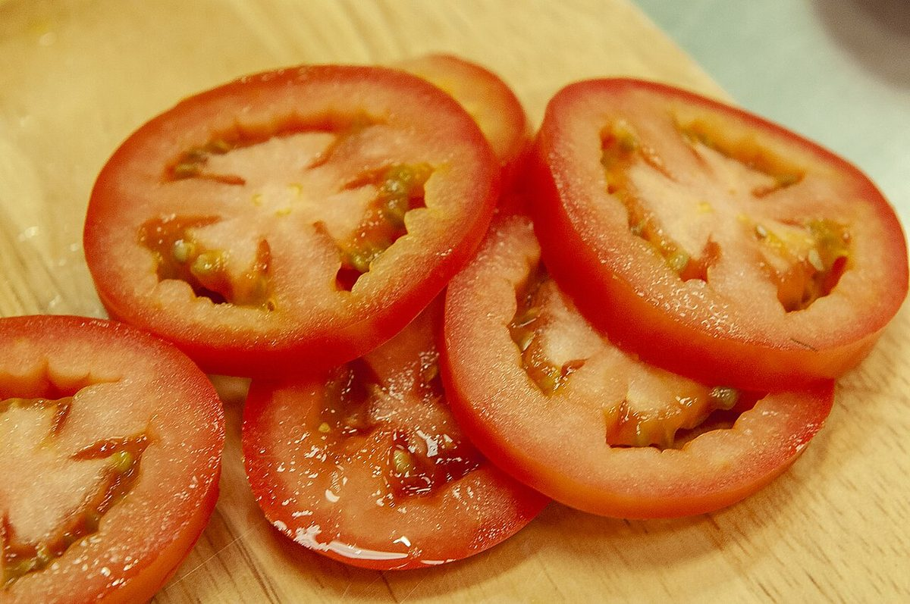

#800 / アクセス
アクセス
仕上げ目の#800。いちばん細かな情報を、ここにまとめます。
#800所在地
| 所在地 | 〒031-0073 青森県八戸市売市２丁目２−２５ |
|---|---|
| 電話 | なし |
| 営業時間 | 準備中 |
| 定休日 | 準備中 |
| メニュー・価格 | 準備中 |
| ご予約 | 準備中 |
| 駐車場 | 準備中 |
| SNS | Instagram @sandmania.hachinohe |
地図は住所をもとに表示しています。位置が少しずれる場合があります。

#800お問い合わせ
電話番号はありません(電話: なし)。ご連絡はInstagramからお願いします。
Instagram @sandmania.hachinohe
営業時間・定休日・駐車場は準備中です。確認でき次第、掲載します。